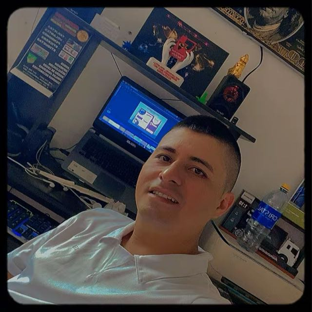

Hola, soy Samdersson Nuñez. Perfil híbrido único: construyo software robusto a medida (Python, React, Django) y diseño estrategias de pauta digital orientadas a ROAS (Meta & Google Ads).

Soluciones técnicas, creativas y estratégicas enfocadas en eficiencia y retorno de inversión.
Construcción de aplicaciones web interactivas, sistemas desacoplados con arquitectura REST API, bases de datos y dashboards de control.
Gestión avanzada de campañas en Meta Ads y Google Ads, segmentación de audiencias, optimización de CPL/CPC y enfoque total en ROAS.
Desarrollo de aplicaciones nativas para Windows con Python y CustomTkinter para control de inventarios, facturación y gestión local.
Optimización de ficha de Google Business Profile, SEO local para negocios físicos, gestión de reputación y visibilidad en mapas de búsquedas locales.
Creación de identidad visual, piezas publicitarias para redes sociales, branding comercial y material gráfico impreso o digital.
Sistemas web, plataformas interactivas y soluciones de pauta desplegadas en producción.
Estrategia integral de pauta digital y embudos de conversión. Especialista en configuración de campañas en Meta Ads y Google Ads, segmentación avanzada de audiencias y optimización orientada a métricas clave (CTR, CPC, CPL, ROAS).
Plataforma integral para el monitoreo, trazabilidad y control operativo en planta. Centraliza el registro de peso, procesos de producción, gestión de inventario y analítica operativa en tiempo real.
Plataforma web corporativa diseñada para la presentación de servicios de marketing, pauta digital y branding estratégico con captura directa de clientes.
Plataforma web para iniciativas de movilidad sostenible y alquiler/gestión de bicicletas, enfocada en una interfaz limpia e interactiva.
Catálogo digital interactivo optimizado para la exhibición visual de piezas artísticas y decoración, facilitando pedidos directos.
Aplicación de menú y combos promocionales interactivos para establecimiento comercial, diseñada para agilizar pedidos desde dispositivos móviles.
Sitio web comercial y menú interactivo para repostería y cafetería de especialidad, integrando catálogo visual de productos y contacto directo.
Plataforma para administración de presupuestos, clientes y flujos de trabajo en tiempo real con arquitectura desacoplada.
Plataforma para la asignación, programación y control de turnos operativos para personal de empresa, optimizando la distribución de horarios y la gestión laboral.
El stack técnico, gráfico y publicitario con el que construyo soluciones integrales.
Cotiza tu proyecto o solicita una asesoría estratégica para impulsar tu negocio.